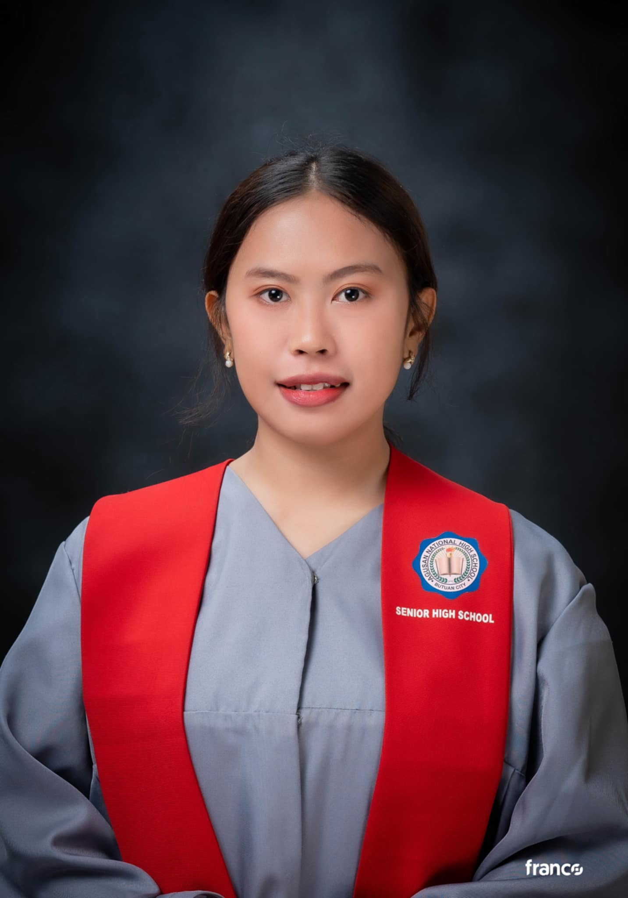

Rochelle T. Cabusao
Library & Information Science Student
Passionate about Knowledge Organization and Information Management

Featured Accomplishments
ULISS Officer
Recognized as an Auditor for the Organization of Library and Information Science Students (ULISS)
Jansen Library Assistant
Successfully completed duties as a student assistant in the Jansen Library
BLIS Student
Passionate student of Library and Information Science dedicated to promoting knowledge access and information management.